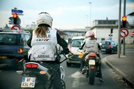
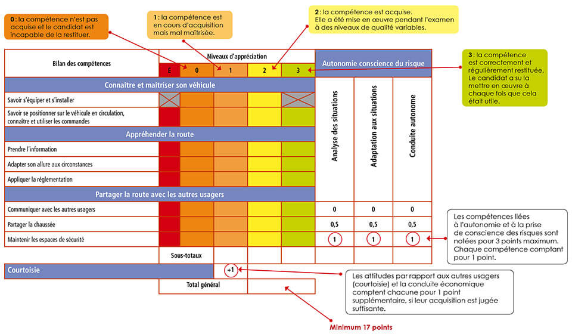

La circulation – on dit « la circu » ou « la route » – est considérée par certains comme la partie la plus facile du permis. Il est vrai que le taux de réussite avoisine en général les 90% à la première présentation, alors que ce chiffre est aux alentours des 50 à 60 % pour le plateau. La loi française prévoit un minimum de 12 heures de cours en circulation afin de se préparer à l’examen. Dans les faits, la grande majorité des candidats au permis A suivent entre deux et six heures de cours en circulation. Pourquoi ? Avant tout parce que l’épreuve en plateau est sur-valorisée, à l’inverse, l’épreuve en circulation est bien plus subtile, elle laisse place à des comportements sujets à interprétation dans un contexte sans cesse changeant, elle est beaucoup plus difficile à évaluer par des inspecteurs qui, dans leur immense majorité, ne sont pas motards pratiquants. Du coup, les inspecteurs se montrent en général stricts en plateau et plus conciliant en circulation. En effet, il on observe des taux de succès de 90 à 95% dès la première tentative, contre 50% pour l’épreuve du plateau. 12 heures de cours circulation , c’est bien le minimum si on veut vraiment essayer de tout voir, et encore sans approfondir : conduite en ville, en campagne, sur voie rapide, autoroute, en virages, de nuit, sous la pluie, dans les embouteillages, en solo, en duo, en groupe… Il est donc important de ne pas négliger cette étape !! voici la fiche de notation de l’épreuve de circulation :
